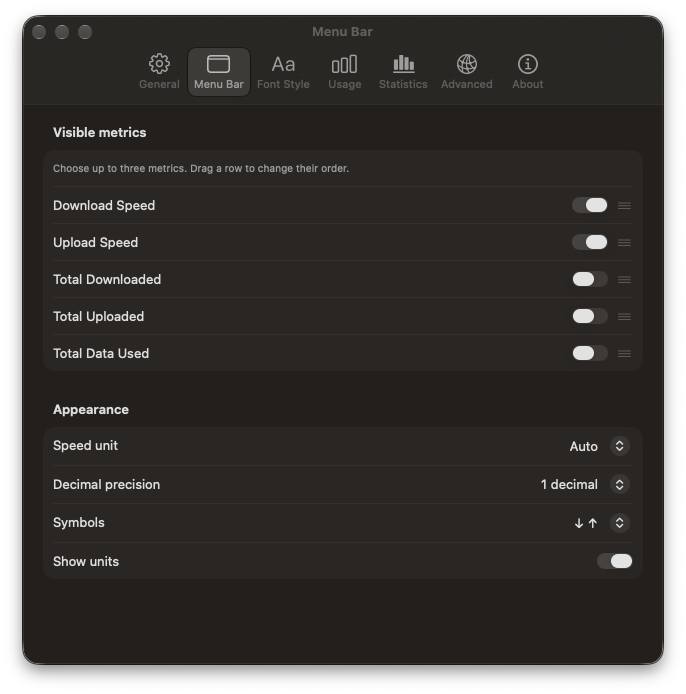
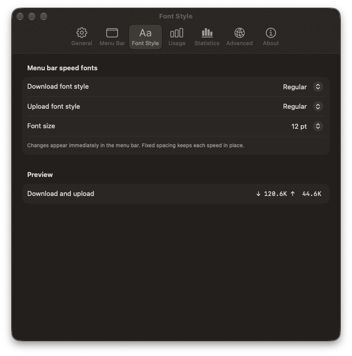
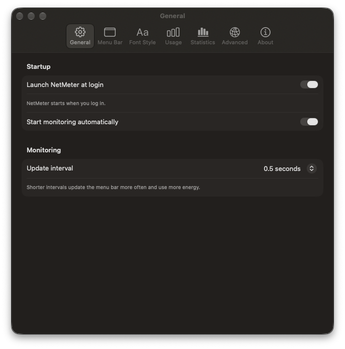
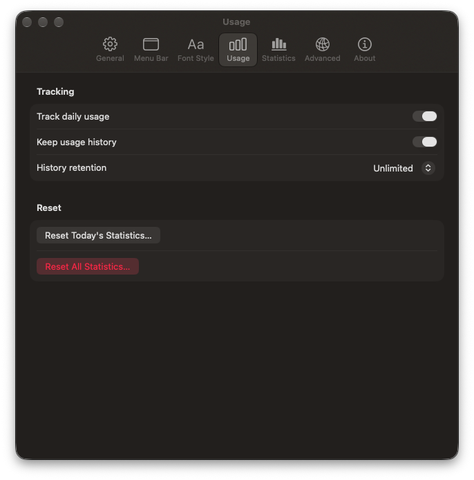

Live upload and download
Current rates update in the menu bar. Choose units, decimal precision, and up to three metrics.
NetMeter shows live download and upload speeds where you can see them at a glance. Review daily data usage, adjust the readout, and export your history to CSV.
macOS 15 or later · Apple silicon and Intel. The current preview download is not Apple notarized, so macOS may block it. Building locally is the supported way to try NetMeter now.
Three aligned metrics. No shifting as the numbers change.
A compact macOS network monitor for current transfer rates and the data used while NetMeter is running.
Current rates update in the menu bar. Choose units, decimal precision, and up to three metrics.
See today, yesterday, recent days, and a 14-day chart. Export retained daily totals as CSV.
Fixed spacing keeps values in place. Set separate styles for download and upload and reorder the metrics.
Real views from NetMeter’s Settings window. Statistics lives in the same window.




No. NetMeter reads macOS network interface counters to show current transfer rates. It does not test the maximum speed of your connection.
On your Mac, in your Library folder. NetMeter counts usage while it is running and can export retained daily totals to CSV.